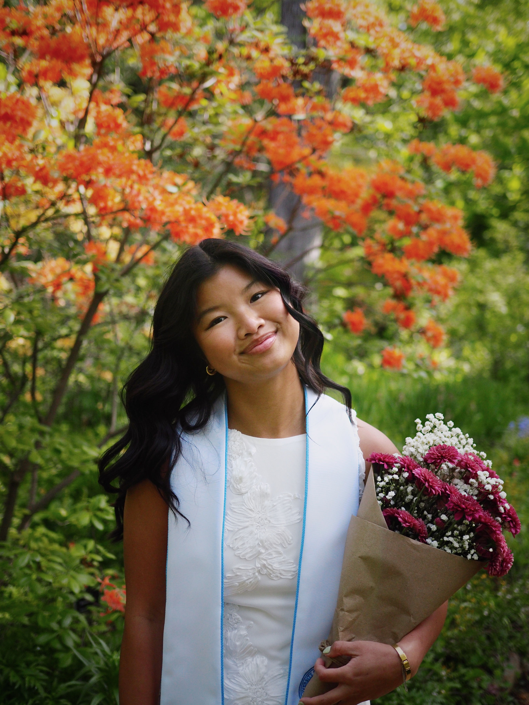

About Me
Hello! I am Lydia, a photographer based in Chapel Hill, NC. I am also a Master's in City and Regional Planning student at UNC-Chapel Hill.
In Spring 2026, 34 graduates from UNC trusted me to document their significant milestone,
and I delivered over 2,400 edited photos. This experience helped me redescovered my love for photography and the opportunity to work with so many amazing people.
I am drawn to warmth and true colors and am currently experimenting with film.
Though grad photos will always be special to me, I am excited to grow my skillset and work on new projects.
If you have a photography project in mind, please reach out through my interest form or email. I am open to all types of projects from portraits to landscapes to events and more!
In addition to photography, I enjoy cooking/baking, traveling, spending time outdoors, and spending time with friends. Recently, I have been trying to restart my sourdough journey and find people to play pickleball with.